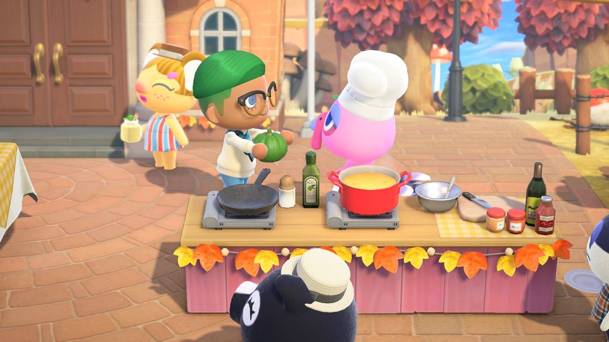
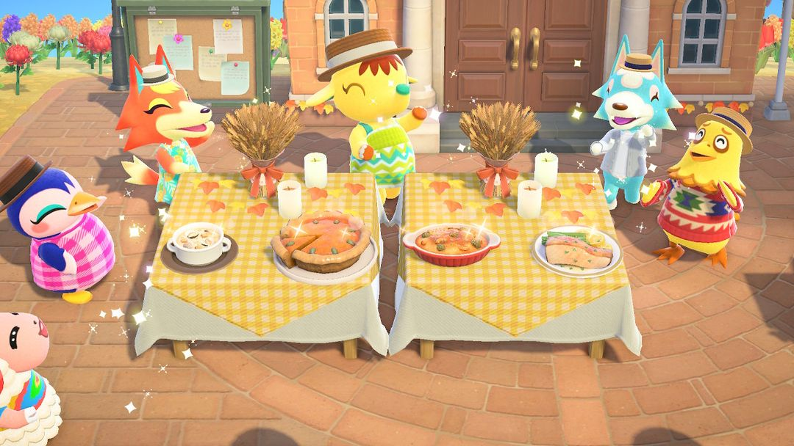
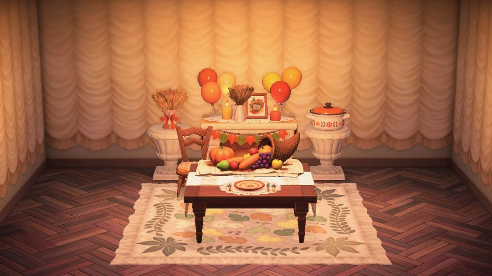

感恩節：幫富藍湊齊四道菜的食材
每年 11 月第四個星期四，提前一個月就能把食材備好
感恩節當天，服務處前的廣場擺起長桌，島民戴著帽子、端著盤子來過節。主廚是火雞富藍，他負責掌廚，你負責跑腿找食材。時間是每年 11 月第四個星期四的 9:00 到 24:00，具體是哪天可以看動森圈圈的活動日曆。
富藍一共做四道菜，每道菜做好會送你一件感恩節家具：感恩節地毯、牆、地板，最後是豐饒之角。每道菜他還會再要一樣「秘密食材」，交了另有獎勵，第四道的秘密食材換來的是整套感恩節家具的 DIY 方程式。要的東西裡有南瓜、有海鮮，有的得潛水、有的得等南瓜長大，當天現找很趕。所以提前把南瓜種下去，海鮮抓好放進收納，當天就從容多了。

給富藍送食材（圖：任天堂宣傳圖，經 Nookipedia）
01哪天過節
日期跟著美國感恩節走：每年 11 月的第四個星期四，南北半球同一天。北半球那時候是慶祝秋天的收穫，南半球正是春天，過的是春天的節日，富藍要的部分食材也跟著不一樣。
02當天怎麼玩
流程是一道菜一道菜地來：
1. 9 點後去廣場找富藍，他會說這道菜還缺什麼。
2. 把食材交給他，菜就做好了，你拿到這道菜的獎勵。
3. 他接著會問要不要再加點「秘密食材」。交了，就多拿一份獎勵。
4. 四道菜依序做完，島民們會在服務處前跳舞唱歌，一直熱鬧到午夜。
每道菜要的食材和秘密食材如下。有些格子寫著「之一」，是富藍從幾樣裡挑一樣跟你要，當天指定哪樣就交哪樣。
| 菜 | 要的食材 | 秘密食材 |
| 蛤蜊巧達湯 | 蛤蜊 ×3 | 帆立貝 |
| 南瓜派 | 橘色南瓜 + 綠 / 白 / 黃南瓜之一 | 沒要過的另外兩色南瓜 |
| 焗烤 | 北：任一種蘑菇或牡蠣 + 貽貝 / 胡蘿蔔 / 馬鈴薯之一 南：魷魚 + 海膽 / 胡蘿蔔 / 馬鈴薯之一 | 首長黃道蟹 |
| 法式煎比目魚排 | 鱸魚 + 麵粉 / 比目魚 / 鯛魚之一（北半球還可能要鰈魚） | 條石鯛 |

四道菜都做好了（圖：Nookipedia）
食材不夠，去島民家逛逛
手頭缺東西的話，去島民家裡串串門子。在家做飯的島民會缺一樣魚或海洋生物，幫他找來，他會回送一樣富藍要用的食材，還會順口透露目前的秘密食材是什麼。秘密食材心裡沒底的時候，先去問一圈再動手找，能少跑冤枉路。
03能拿到什麼
每道菜做完都有一件固定的獎勵，交了秘密食材再多一件：
| 第幾道 | 做完 | 交了秘密食材 |
| 1 | 感恩節地毯 | 隨機一件感恩節家具 |
| 2 | 感恩節牆 | 隨機一件感恩節家具 |
| 3 | 感恩節地板 | 隨機一件感恩節家具 |
| 4 | 豐饒之角 | 多彩多姿感恩節DIY |
分量最重的是第四道的「多彩多姿感恩節DIY」，一次學會 8 份 DIY 方程式：感恩節壁爐、感恩節桌、感恩節椅、感恩節桌上布置、感恩節砂鍋燉菜、感恩節裝飾、感恩節盆栽架、感恩節麥子裝飾。北半球學到的是秋收的配色，南半球是春天的配色，做出來以後兩種可以互相改造。前三道的秘密食材交不交只差一件隨機家具，第四道這一樣別漏掉。
四道菜全做完，富藍還會送你「感恩節‧料理」，學會這四道菜的料理方程式。要先開放料理功能才學得了。

感恩節系列家具和豐饒之角（圖：Nookipedia）
04提前一個月能準備的
南瓜趁早種。南瓜苗然然那裡一年四季都有，280 鈴錢一個，長出來什麼顏色是隨機的。南瓜派要橘色加另一種顏色，秘密食材還要另外兩色，四種顏色都留幾個，到時候富藍指定哪個都拿得出來。
海鮮先抓好放進收納。蛤蜊在沙灘上挖，帆立貝和首長黃道蟹得下海潛水去抓，條石鯛、鱸魚在海邊釣。這些都能放進收納，平時碰到就留下，當天不用臨時滿海找。
麵粉備上幾袋。法式煎比目魚排可能會指定要麵粉。自己種小麥，或是在 Nook商店買都行。
小提示當天錯過了也能補：感恩節隔天到 11 月 30 日，Nook商店會擺出「多彩多姿感恩節DIY」和「感恩節‧料理」這兩份。正好碰上黑五購物節全場 7 折，DIY 那份 13,860 鈴錢，料理那份 6,860 鈴錢。
05版本變化
2.0 起，焗烤可能改要胡蘿蔔、馬鈴薯，法式煎比目魚排可能改要麵粉。同一版本還加了「感恩節‧料理」，以及感恩節之後的黑五購物節。3.0 的更新說明裡沒提到感恩節有改動。
動森圈圈 · iOS App 和微信小程式都搜「動森圈圈」